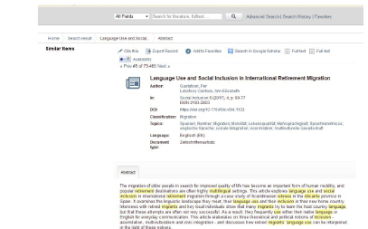

Lessons Learned from Users Reading Highlighted Abstracts in a Digital Library


Venue. CHIIR (2019)
Abstract. Finding relevant documents is essential for researchers of all disciplines. We investigated an approach for supporting searchers in their relevance decision in a digital library by automatically highlighting the most important keywords in abstracts. We conducted an eye-tracking study with 25 subjects and observed very different search and reading behavior which lead to diverse results. Some of the participants liked that highlighted abstracts accelerate their relevance decision, while others found that they disturb the reading flow. What many agree on is that the quality of highlighting is crucial for trust and system credibility.
Link to this page: